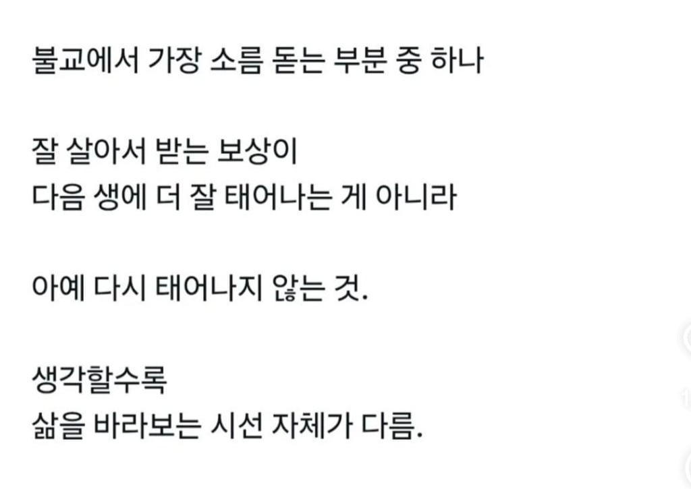
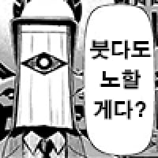

난 그냥 별 생각 없음
생즉고라
108번뇌 베기!!
여기가 지옥인가
지옥 중에서는 좀 미지근한 곳인거 같네요 여긴
다음 생에 아예 태어나지 않는 게 아니라...
깨달음을 얻은 지금 생의 기억을 가지고 극락으로 가는 겁니다...
생을 부정하는 게 아니라 '극락왕생(生)',
즐거움이 가득한 상태로 영원히 살아가는 것을 추구하므로
오히려 생을 무한히 긍정하는 태도라고 할 수 있지요
말이 아 다르고 어 다른데 뭔 싯팔 부처님을 반출생주의자로 만들어버리십니까
한낱 미물도 함부로 죽이지 말라고 가르치는 것이 불교인데 니들 생명은 부정한 것으로 바라볼까요?
하여튼 ㅈ같은 트위터발 병신새끼들 또 ㅈ같은 소리하면서 나를 번뇌하게 만드네
영생이 통상적으로 생각하는 영생이 아니기에 저렇게 해석할 수도 있죠. 물론 저런애들은 윤회의 굴레속에서 누구보다 벗어날수 없는 애들인건 팩트

번뇌와 끝없는 윤회를 끊어냄으로써 업과 고통으로부터의 해방이 목적인가
개떡같이 말해도 찰떡같이 알아 들으시는군요!
이 새끼들.. 다 이세계전생했단 말인가..!
지크 예거가 옳았잖아
유일한 구원...
고통을 태어났기에 생기는 것...
옛날에는 산다는 것 자체가 쉽지않겠지 ㅎㅎ
윤회에서 벗어나는건데 안태어난다고만 하면 ㅋㅋㅋㅋㅋ 틀린말은 아닌데 ㅋㅋㅋㅋㅋ
불교 알못인가
윤회의 업을 끊었다는거는
깨달음을 얻었다는거고
꺠달음을 얻으면 무한 수명 + 초능력 생기는거임
무한 수명이니까 당연히 다시 못태어나지

세상 만물은 변화하는 것이고, 변화하는 것을 막으려 한다고 막을 수 없는 것임을 받아들이고
그러면 어떤 것에도 집착하지 않게 되고, 집착하지 않으니 고통받을 일이 없어짐
해탈에 이르려고 수행한다, 극락 너머에 열반이 있다 이런 건 불교가 형성되면서 덧붙여진 이야기들
부처 본인이 한 이야기랑은 별 상관이 없음
오히려 본문에서 설명하는 내용은 부처 이전에 이미 깔려있던 힌두교에 가까운 사상이라고 할 수 있음...